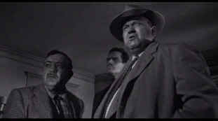

| Touch
of Evil/B+,C+ |
| Universal/1958/111/ANA
1.85 |
Hallelujah brother! This is Touch
of Evil pretty close to the way Orson Welles wanted us to see it, and there is no question that
the power of the film is enhanced by this longer cut with a cleaner story line. Ironically, in the
Welles preferred cut, there is more shifting back and forth between the protagonists, yet
everything comes together with greater precision. Evil does pour from every pore of Touch
of Evil, from the flesh-distorted bloated close-ups of Hank Quinlan to the cheap music playing
in the background. It's a tawdry picture made with exquisite grace. All shadows and
perspiration, angled views into the nooks and crannies of humanity.
 |
| Quinlan investigates as Grandi and
Vargas look on. ©Universal |
The last of Welles' Hollywood films, Touch
of Evil moves along an excellent noir arc. Set in adjoining Mexican and U.S. border
towns, the focus is on corruption of the soul, abuse of authority, and ethnic prejudice. The
story of a gang trying to pressure a special prosecutor to influence a trial, twists from that
intent to a darker look at the last dirty investigation of a local law enforcement legend.
Charlton Heston and Janet Leigh star as the Mexican law enforcement
official and his new American bride. Heston is effective as Vargas, an unusually delicate role for
him. I like his restraint and civility under the toughest circumstances. His clean-cut posture is a
terrific foil for the loathsomely lumbering Welles. Leigh looks great as Susan Vargas and
does fine wide-eyed work, delivering a combination of innocence and American arrogance. But
it is Welles who steals the show as corrupt cop Hank Quinlan. It's a disgustingly sly performance,
embellished by magnificent camera work. Every drop of Welles sweat is captured by the camera. His
girth is amplified by low angles compositions and his heavy five o'clock shadow is sharply focused.
Welles makes it fun to watch Quinlan, every limping step of the way. The two outstanding supporting
performances are from Akim Tamiroff, broadly playing with Mexican stereotypes as Uncle Joe Grandi
and Joseph Calleia as Quinlan deputy Menzies. Calleia plays Menzies with dog-like devotion. His
flat dialogue delivery takes getting used to, but it's a touching performance.
Touch of Evil is famous for its magnificent camera work. The opening
crane shot, tracking and introducing characters through the streets of a border town deserves its
reputation. Russell Metty combines with Orson Welles to deliver many enduring images in Touch of
Evil and the opening flare is just the first of many terrific cinematic accomplishments. This is
truly a movie painted in shadows. And the soundtrack is excellent with the tinny ethnic and
rock music dominating the background.
Not everything is perfectly convincing in Touch of Evil. Some of
Susan Vargas naivety is perplexing to say the least. And the final scene when Vargas track Quinlan
and Menzies plays somewhat awkwardly, but it is nevertheless effective. I keep wondering how
assistant DA Schwartz knows exactly where to go to pick up the tape recorder. But it doesn't really
take the film down much. The ambiance and sleaziness is never compromised and that's at the heart
of this depiction of evil.
To my surprise, the elements for Touch of Evil are very clean,
seldom showing dirt or scratches. I suspect digital cleaning was done during the transfer to clean
the image; unfortunately, there are quite a few very soft scenes that may have resulted as a by
product of the cleaning. Making transfers from older elements is often walking a tight rope of
decision making. The question becomes what's preferable, dirt and scratches over a sharp image or a
noticeably soft image wiped clean. I believe it's foolish to create a greater problem to hide a
lesser one. Soft images are the worst option. As long as the releasing studio advises the public as
to the condition of the elements, they are being responsible. Yes, it's a Catch-22 for the studios:
they are lambasted for poor element condition when they don't clean up a film digitally and soft
image when they do. Well, bite the bullet guys. If you cannot economically justify a true
restoration, that's okay. Just let the buyer know and deliver the easiest image to watch.
That said, the contrast levels for Touch of Evil are excellent and
Russell Metty's seductive moody photography is preserved with meticulous precision. The mono sound
is clean and open. Dialogue, though sometimes sounding looped, is mostly easy to understand.
Included with Touch of Evil is the 58 page memo written by Welles
to the studio after they recut his version of Touch of Evil. Reading this after watching the
film is very interesting and gets into the mind of Welles as a filmmaker. Certainly, an opportunity
was missed by not hooking the notes up with the scenes in the truncated studio version which Welles
is referring to. That would have been a film course in itself.
|
|

The Feature Archive has articles ranging
from Akira Kurosawa
to Blonde Bimbos and John Ford.

Click on the image of The
Heistmasters for an interesting feature on the tough guys that pull off the big jobs.

DVDPlanet is the DVD
incarnation of legendary laser retailer Ken Crane's. Deep discounts and serious service.
They may be judgmental, but that's the point, isn't it. Lots of DVD reviews plus news and more.
Click on the link to visit the judge's chambers.

The Cinema Laser
A home grown magazine for laserphiles that has been publishing for a number of years and has
embraced DVD in a big way. Lots of helpful information.

Doug Pratt's been doing almost longer than anyone in the business, reviewing laser discs, that is,
and now DVDs too. The venerable Laserdisc Newsletter has been publishing since 1984. Pratt probably
has a large enough stock of laser discs in his house to build a DVD-proof bomb shelter. Check out
his on-line reviews at DVDlaser.com.

The official site for information about the great comic director. A treat for connoisseurs of
classic Hollywood madcap.

Ask Digital Man is
the web's only 24-hour, totally FREE source for all your home theater, DVD, Dreamcast, PC, and
Networking tech support needs!

The Movie Poster
Archive includes extensive poster images from the films of stars like Susan Hayward, Kirk Douglas,
Katharine Hepburn and many more. Our
featured star is Edward G. Robinson

Need a daily fix of movie
quotes. Reel Quotes Newsletter has the answer. Click on the Reel Quotes symbol for more.
|